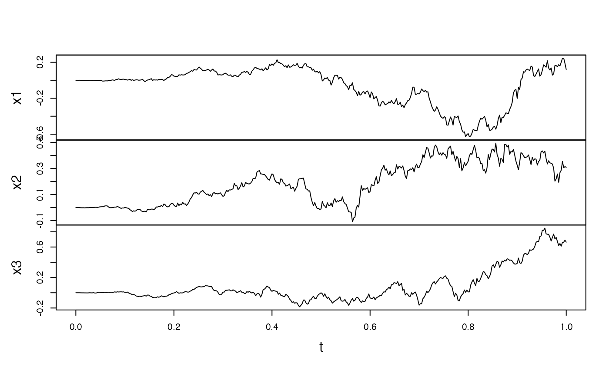

bns.test.RdTests the presence of jumps using the statistic proposed in Barndorff-Nielsen and Shephard (2004,2006) for each component.
bns.test(yuima, r = rep(1, 4), type = "standard", adj = TRUE)
an object of yuima-class or yuima.data-class.
a vector of non-negative numbers or a list of vectors of non-negative numbers. Theoretically, it is necessary that sum(r)=4 and max(r)<2.
type of the test statistic to use. standard is default.
logical; if TRUE, the maximum adjustment suggested in Barndorff-Nielsen and Shephard (2004) is applied to the test statistic when type is equal to either “log” or “ratio”.
For the i-th component, the test statistic is equal to the i-th component of sqrt(n)*(mpv(yuima,2)-mpv(yuima,c(1,1)))/sqrt(vartheta*mpv(yuima,r)) when type="standard", sqrt(n)*log(mpv(yuima,2)/mpv(yuima,c(1,1)))/sqrt(vartheta*mpv(yuima,r)/mpv(yuima,c(1,1))^2) when type="log" and sqrt(n)*(1-mpv(yuima,c(1,1))/mpv(yuima,2))/sqrt(vartheta*mpv(yuima,r)/mpv(yuima,c(1,1))^2) when type="ratio". Here, n is equal to the length of the i-th component of the zoo.data of yuima minus 1 and vartheta is pi^2/4+pi-5. When adj=TRUE, mpv(yuima,r)[i]/mpv(yuima,c(1,1))^2)[i] is replaced with 1 if it is less than 1.
A list with the same length as the zoo.data of yuima. Each component of the list has class “htest” and contains the following components:
the value of the test statistic of the corresponding component of the zoo.data of yuima.
an approximate p-value for the test of the corresponding component.
the character string “Barndorff-Nielsen and Shephard jump test”.
the character string “xi”, where i is the number of the component.
Barndorff-Nielsen, O. E. and Shephard, N. (2004) Power and bipower variation with stochastic volatility and jumps, Journal of Financial Econometrics, 2, no. 1, 1--37.
Barndorff-Nielsen, O. E. and Shephard, N. (2006) Econometrics of testing for jumps in financial economics using bipower variation, Journal of Financial Econometrics, 4, no. 1, 1--30.
Huang, X. and Tauchen, G. (2005) The relative contribution of jumps to total price variance, Journal of Financial Econometrics, 3, no. 4, 456--499.
Theoretically, this test may be invalid if sampling is irregular.
set.seed(123)
# One-dimensional case
## Model: dXt=t*dWt+t*dzt,
## where zt is a compound Poisson process with intensity 5 and jump sizes distribution N(0,0.1).
model <- setModel(drift=0,diffusion="t",jump.coeff="t",measure.type="CP",
measure=list(intensity=5,df=list("dnorm(z,0,sqrt(0.1))")),
time.variable="t")
#> Warning:
#> YUIMA: Solution variable (lhs) not specified. Trying to use state variables.
yuima.samp <- setSampling(Terminal = 1, n = 390)
#> Warning:
#> YUIMA: 'delta' (re)defined.
yuima <- setYuima(model = model, sampling = yuima.samp)
yuima <- simulate(yuima)
plot(yuima) # The path seems to involve some jumps
bns.test(yuima) # standard type
#> [[1]]
#>
#> Barndorff-Nielsen and Shephard jump test
#>
#> data: x1
#> BNS = 1.6165, p-value = 0.05299
#>
#>
bns.test(yuima,type="log") # log type
#> [[1]]
#>
#> Barndorff-Nielsen and Shephard jump test
#>
#> data: x1
#> BNS = 1.5614, p-value = 0.05922
#>
#>
bns.test(yuima,type="ratio") # ratio type
#> [[1]]
#>
#> Barndorff-Nielsen and Shephard jump test
#>
#> data: x1
#> BNS = 1.5087, p-value = 0.06569
#>
#>
# Multi-dimensional case
## Model: dXkt=t*dWk_t (k=1,2,3) (no jump case).
diff.matrix <- diag(3)
diag(diff.matrix) <- c("t","t","t")
model <- setModel(drift=c(0,0,0),diffusion=diff.matrix,time.variable="t",
solve.variable=c("x1","x2","x3"))
yuima.samp <- setSampling(Terminal = 1, n = 390)
#> Warning:
#> YUIMA: 'delta' (re)defined.
yuima <- setYuima(model = model, sampling = yuima.samp)
yuima <- simulate(yuima)
plot(yuima)

bns.test(yuima)
#> [[1]]
#>
#> Barndorff-Nielsen and Shephard jump test
#>
#> data: x1
#> BNS = 1.3401, p-value = 0.09011
#>
#>
#> [[2]]
#>
#> Barndorff-Nielsen and Shephard jump test
#>
#> data: x2
#> BNS = 0.33816, p-value = 0.3676
#>
#>
#> [[3]]
#>
#> Barndorff-Nielsen and Shephard jump test
#>
#> data: x3
#> BNS = 0.14015, p-value = 0.4443
#>
#>